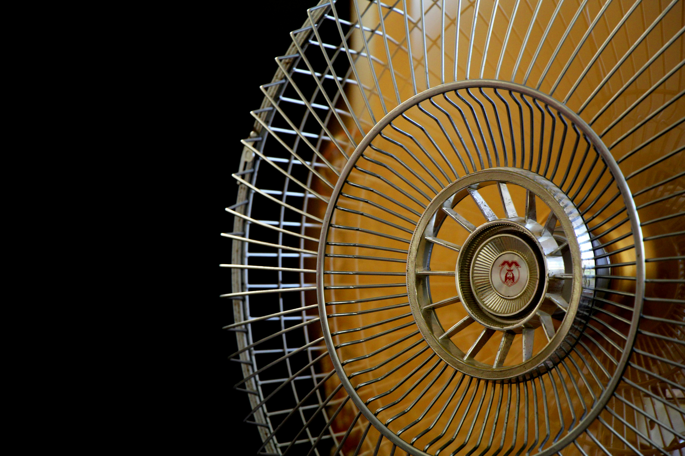
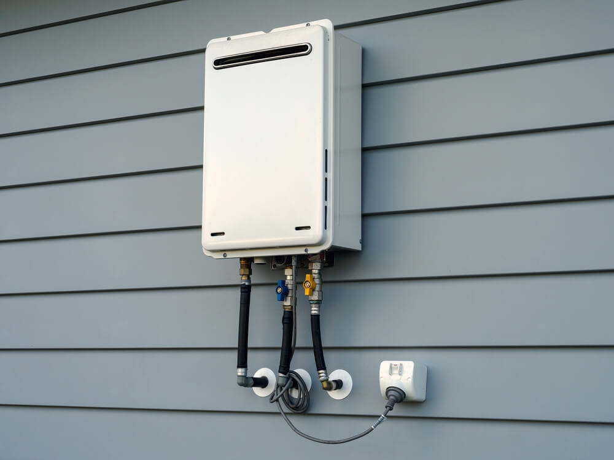
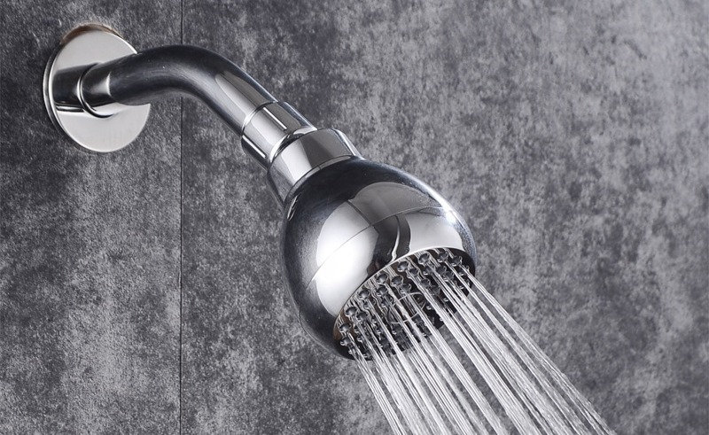
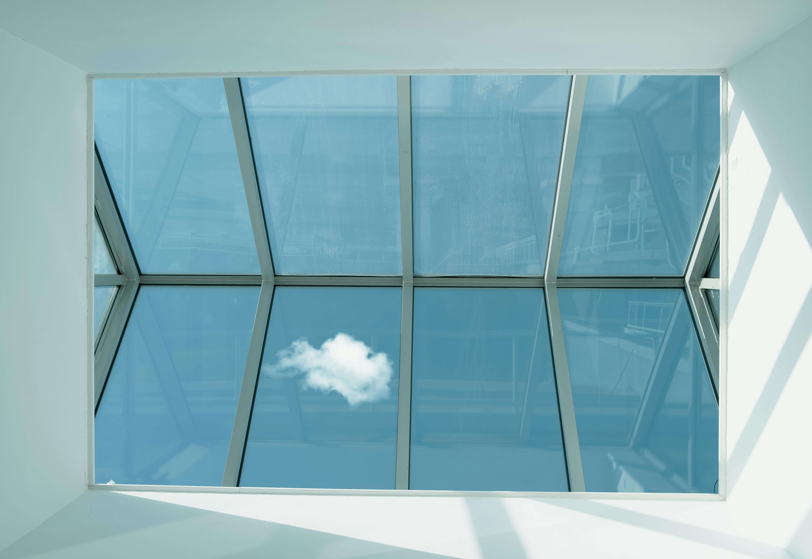

10 ways to make your home more energy efficient
Written By: Avery Grey In No category
Energy efficiency means you are using less energy to do the same jobs, reducing your home's energy waste and saving money. To effectively increase your energy efficiency involves more than just using less energy. It requires you becoming more aware of how energy is used, where it's wasted, and how it can be used more effectively and efficiently in everyday life. Here are 10 top tips to help your home save energy and be more efficient.
1. Find better ways to heat and cool your house.

As much as half of the energy used in homes goes toward heating and cooling, installing a ceiling fan can be used in place of air conditioners, which require a large amount of energy.
Periodically, replace air filters in air conditioners and heaters. Set thermostats to an appropriate temperature. Specifically, they should be turned down at night when no one is at home. In most homes, about 2% of the heating bill will be saved for each degree that the thermostat is lowered for at least 8 hours each day. Turning down the thermostat from 75 to 70, for example, saves about 10% on heating cost.
Installing a programmable thermostat saves money by allowing heating and cooling appliances to automatically turn down during times no one is home or at night. Programmable thermostats in some climate zones can save up to a $150 a year in energy cost. Also, at night, curtains drawn over the windows will better insulate a room.
2. Install a tankless water heater.

Demand type water heaters, tankless and instantaneous, provide hot water only as it is needed.
They don't reduce the standby energy losses associated with traditional storage water heaters, which will save on energy costs. Tankless water heaters heat water directly without the use of a storage tank. When a hot water tap is turned on, cold water travels through a pipe into the unit. A gas burner or electric element heats the water. As a result, demand water heaters deliver a constant supply of hot water, and you don't need to wait for a storage tank to fill up with enough hot water.
3. Replace incandescent lights.

The average household dedicates 11% of its energy budget to lighting. Traditional incandescent lights convert approximately only 10% of the energy they consume into light, while the rest becomes heat. The use of new lighting technologies such as light emitting diodes, also known as LEDs, and compact fluorescent lamps, CFLs can reduce the energy use required by lighting by 50 to 75%. Advances in lighting controls offer further energy savings by reducing the amount of time that lights are on but not being used.
4. Properly insulate your home.
Properly insulating your home is one of the most cost effective ways to make a home more comfortable and energy efficient. A tightly sealed home can improve comfort and indoor air quality by reducing utility bills and the cold and drafting this in a home. Hot air naturally rises. Therefore, if your home's attic doesn't have sufficient insulation, a large percentage of the heat in your home will simply go up and out through your attic.
The good news is that you can add insulation in your attic and enjoy the subsequent savings year after year.
5. Install efficient shower heads and toilets.

Low flow shower heads are available in different flow rates, and some have a pause button which shuts off the water while the bather lathers up. Toilets consume 30 to 40% of the total water used in homes, making them the biggest water users. Replacing an older 3.5 gallon toilet with a modern low flow 1.6 gallon toilet can reduce usage on an average of 2 gallons per flush, also known as GPF, saving 12,000 gallons of water per year.
Low flow toilets usually have a 1.6 g p f marked on the bowl behind the seat or inside the tank. Another type, known as a dual flush toilet, has been used in Europe and Australia for years and are now gaining popularity in the US.
6. Buy Energy Star appliances and electronics.
These devices approved by the US Department of Energy and the Environmental Protection Agency's Energy Star program include everything from TVs, home theater systems, and more. Appliances and electronics account for about 20% of the household energy bills in a typical US home.
According to the EPA, if just 10% of homes use energy efficient appliances, it would reduce carbon emissions by the equivalent of 1,700,000 acres of trees. That's a lot of trees.
7. Install daylighting as an alternative to electrical lighting.

Daylighting is the practice of using natural light to illuminate the home's interior. The most common way this is done is by installing or designing in skylights.
It's important that they be double pane or they may not be cost effective. But keep in mind, flashing skylights correctly is key to avoiding leaks. Similar to skylights are light tubes, which use a special lens designed to amplify low level light and reduce light intensity from the midday sun. Sunlight is channeled through a tube coated with a lightly reflective material and then enters the living space through a diffuser designed to distribute light evenly. Daylighting can reduce overall energy cost by 25%.
8. Insulate windows and doors.
About 1 third of the home's total heat loss usually occurs through the windows and doors. Seal all window edges and cracks with rope caulk. This is the cheapest and simplest option. Windows can be weather stripped with a special lining that is inserted between the window and the frame.
For doors, apply weather stripping around the whole perimeter to ensure a tight seal when they're closed. Install quality door sweeps at the bottom of the doors if they aren't already in place. Install storm windows at windows with only single panes. A removable glass frame can be installed over an existing window.
9. Landscaping for energy efficiency.
A well designed and energy efficient landscape can reduce your heating, cooling, and lighting costs. In certain circumstances, carefully positioned trees and shrubs can save up to 25% of the energy a typical household uses. Energy efficient landscaping has additional benefits, such as lower maintenance costs, a reduction in water use, and acquire their home and cleaner air.
10. Hire an energy auditor to do a walk through.
An energy auditor can assess where your home is losing the most energy and then proposes improvements to make to help save energy and reduce your utility bills.
Professional energy audits can take anywhere from 30 minutes to 4 hours to complete depending on the size of your home.